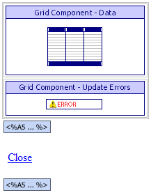
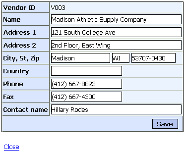

ASWVENDONE.A5W
Purpose
The ASWVENDONE.A5W page provides a vendor lookup function for the GRD_LKVEN grid component, which is used when the application administrator is editing or adding a product record.
Description
The ASWVENDONE.A5W page contains the GRD_VEND grid component, which displays a single vendor record. The record is selected by a filter expression passed in the calling URL. ASWVENDONE.A5W only appears as a lookup for the GRD_LKVEN grid component, which in turn is a lookup for the GRD_PRODDET grid component, which appears on the ASWPRODUCTS.A5W page and thus inherits the security setting of ASWPRODUCTS.A5W.
Links
The GRD_LKVEN grid component calls the ASWVENDONE.A5W page.

ASWVENDONE.A5W in the WYSIWYG tab of the HTML Editor

ASWVENDONE.A5W in the Browser
Edits to the Page Source
When you look at ASWVENDONE.A5W with the Source tab of the HTML Editor, you will see a large amount of HTML and Xbasic code. The HTML Editor placed almost all of it there automatically, as we used the WYSIWYG tab to place the tables, text, graphics, and components on the page. There are a few interesting exceptions, where we changed the page code through the Source tab.
This code tests to see if the back variable has been defined. If not, the script creates it and sets its value to "0". If back is NULL or greater than 1, its value is set to "0". If back = "1", text is displayed. The link uses JavaScript to simulate the browser "Back" button.
|
if eval_valid("back") = .F. back = "0" elseif back = "" back = "0" elseif val(back) > 1 back = "0" end if |
The following code overrides a number of grid properties. The edit.allow_insert = .f. statement prevents the user from inserting a new record. The edit.allow_delete = .f. statement prevents the user from deleting the record.
GRD_VEND was designed to be tabular in appearance. The RepeatingColumns = 1 statement causes only one column of records to be displayed. The snaking = "" statement disables snaking. The add_records_only = .f. statement says that the grid is not for adding new records only. The rows = 1 statement causes only one row of records to be displayed. The total_records_row_position = 0 statement means that there is no "Total Records" text.
|
with tmpl_GRD_VEND edit.allow_insert = .f. edit.allow_delete = .f. RepeatingColumns = 1 snaking = "" add_records_only = .f. rows = 1 total_records_row_position = 0 componentName = "GRD_VEND" end with |
If back = "1", this code conditionally displays a hyperlink that returns the user to the previous page.
|
<%a5 if back="1" %> <p> <a on <%a5 end if %> |
Page Security Information
Login Required
Groups Allowed > Accounting, Administrators, Clerical, Marketing
See Also